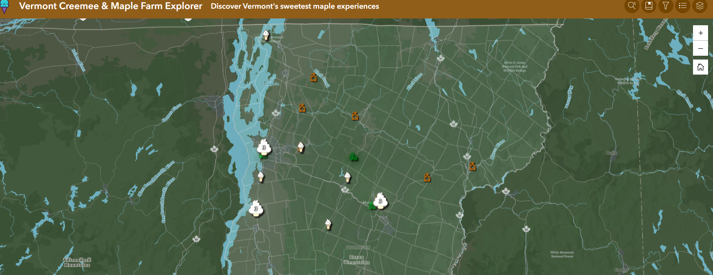

Project Overview
This project explored the geographic patterns associated with Vermont's maple landscape through a series of thematic maps. The project focused on translating geographic data into clear visualizations while using cartographic design principles to build a cohesive interactive narrative.

Geographic overview of Vermont's maple landscape and the spatial context explored in the project.
Cartographic Approach
The project used thematic mapping to communicate geographic patterns within Vermont's maple landscape. Map composition, symbology, visual hierarchy, and geographic context were considered throughout the design process to make the maps accessible and visually coherent.
Visual Communication
Rather than presenting geographic information as a collection of standalone maps, the project organized the maps into an interactive narrative that allows users to explore Vermont's maple landscape spatially.

Final cartographic product designed to communicate the geographic patterns explored in the project.
Key Takeaways
This project strengthened my ability to design maps that balance technical geographic information with clear visual communication. It also provided experience using interactive mapping to present geographic patterns as a cohesive story.
What This Project Demonstrates
- Cartographic design and thematic mapping for communicating geographic patterns.
- Ability to organize multiple maps into a cohesive geographic narrative.
- Experience creating interactive web-based geographic visualizations with ArcGIS StoryMaps.
Interactive Project
Explore the complete StoryMap
The interactive StoryMap brings together the project's maps, geographic analysis, and cartographic narrative.
View Interactive StoryMap →